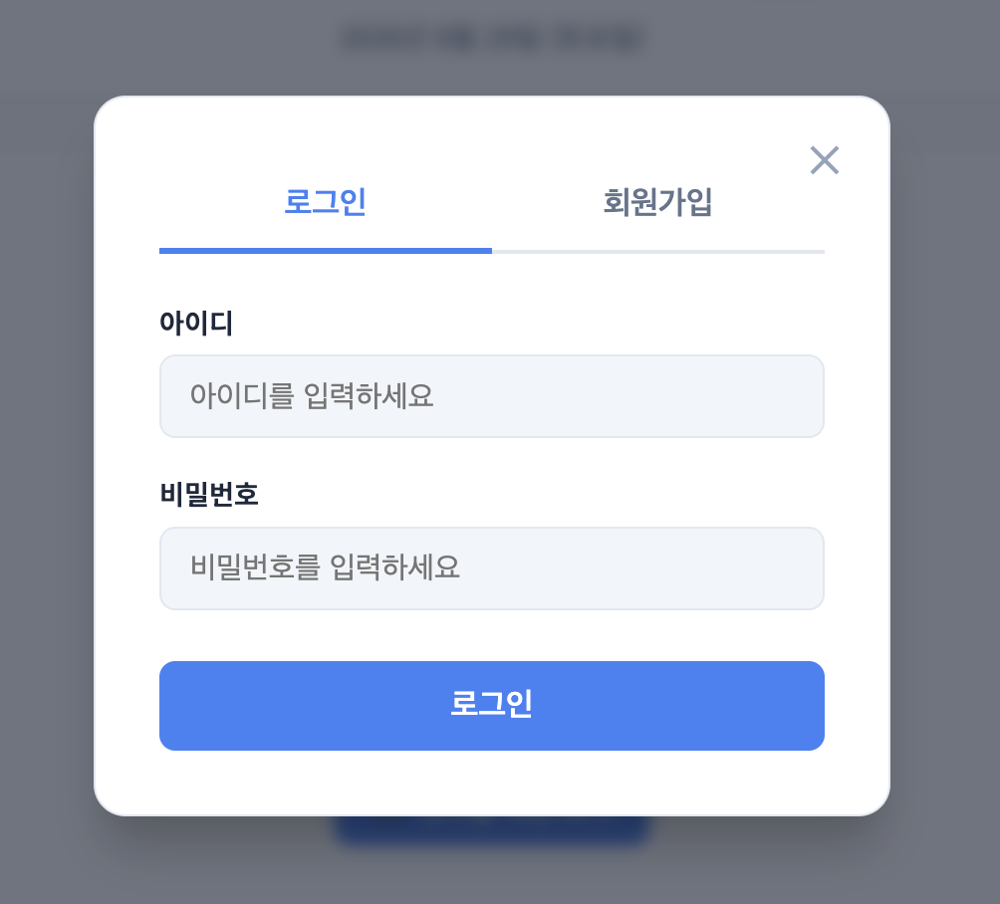
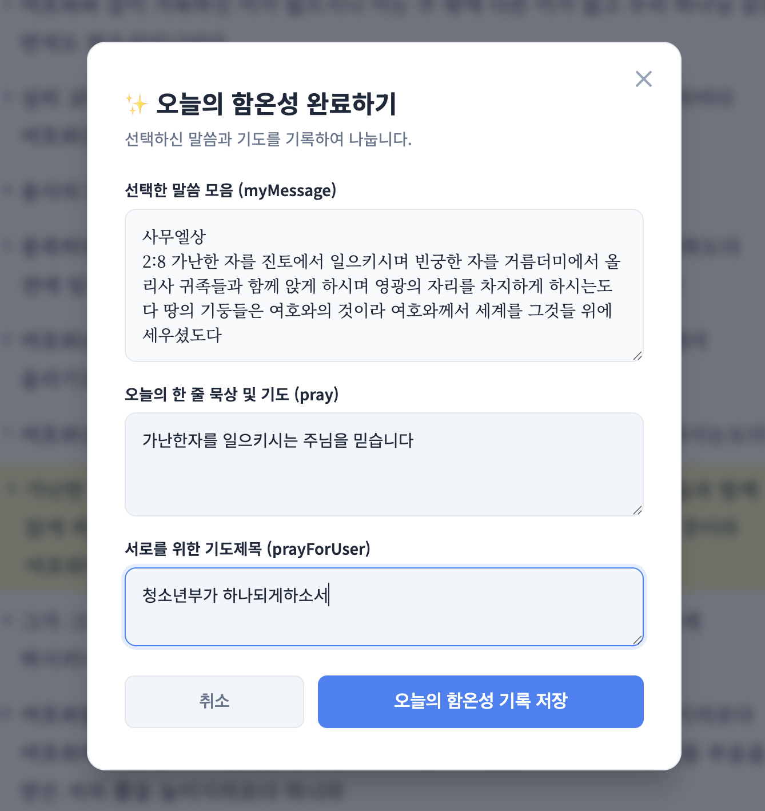

📖 학생용 이용 가이드
청소년부 성경 읽기 앱을 100% 활용하는 방법
1. 시작하기 (로그인)
매일 말씀을 읽기 위해서는 먼저 이름과 비밀번호(초기 설정됨)를 입력하여 로그인해야 합니다.

- 우측 상단의 로그인 버튼을 누릅니다.
- 이름과 비밀번호를 입력합니다. (비밀번호를 모르는 경우 선생님께 문의해주세요.)
2. 오늘의 말씀 읽기
로그인 후, 오늘 날짜에 해당하는 성경 본문이 화면에 나타납니다.
- 본문을 천천히 읽어 내려갑니다.
- 성경 버전 변경: 우측 상단 '버전 선택' 메뉴에서 우리말성경, 개역개정, 새한글 중 원하는 버전을 선택할 수 있습니다.
- 다 읽은 후에는 가장 아래의 말씀 읽기 완료 버튼을 눌러주세요.
3. 함께하는 온전한 성경읽기 (함온성)
함온성은 말씀을 읽고 묵상하거나 기도문을 작성하는 공간입니다.

- 말씀 하단에 위치한 '함온성 (오늘의 기도)' 영역을 확인합니다.
- 오늘 말씀에서 느낀 점, 다짐, 혹은 기도제목을 적고 기도 올리기를 누릅니다.
- 작성한 기도는 다른 친구들과 함께 나눌 수 있습니다 (상단 함온성 현황 📊 클릭).
4. 보기 설정 (테마 및 글자 크기)
눈이 편안하도록 화면을 설정할 수 있습니다.
- 글자 크기: 우측 상단의
A-/A+버튼을 눌러 글자 크기를 조절합니다. - 테마 변경: ☀️ 라이트 모드, 🌙 다크 모드, 📜 페이퍼 모드 중에서 눈에 가장 편한 모드를 선택하세요.